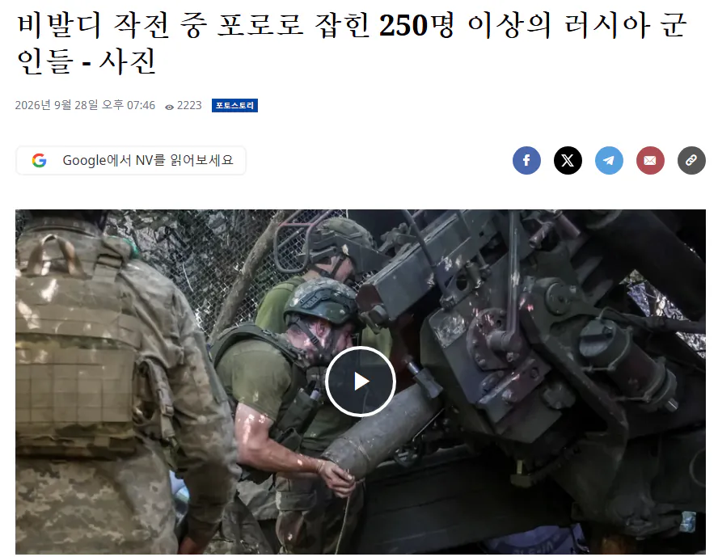
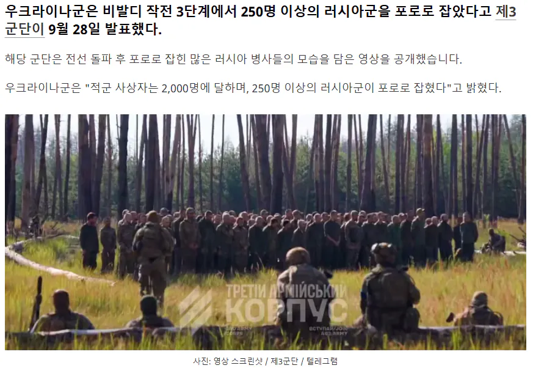
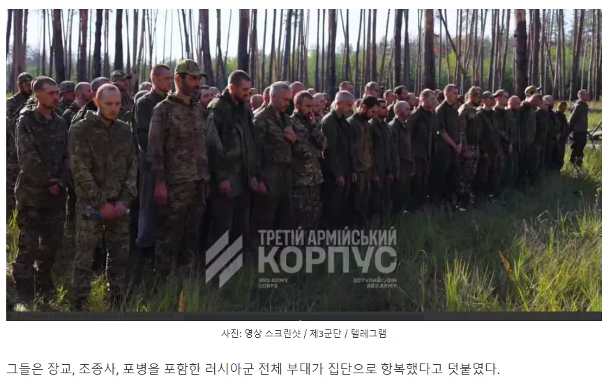
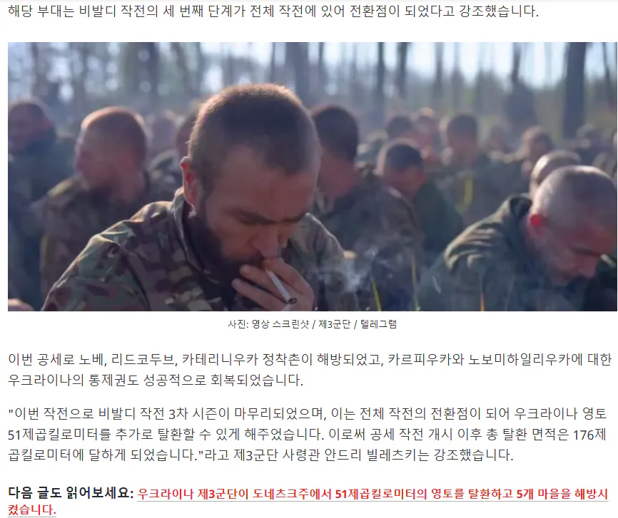

대규모 포로 인솔 영상.




우크라이나 제3군단에 포로로 잡힌 러시아 병사들:
▪️저는 제3기계화보병대대 소속 병사입니다. 저희가 사령부에 항복하게 된 경위에 대해 말씀드리겠습니다. 저희는 헛되이 죽고 싶지 않아 제3군단에 항복했습니다.
▪️장교들은 도망치면서 무전도 꺼버렸습니다. 그들은 저희에게 "경계를 사수하고 버텨라"라고만 했습니다. 무전은 완전히 끊긴 상태였습니다.
▪️저희 진지에는 물 한 모금도 없었습니다. 웅덩이 물을 마시거나 심지어는 소변까지 마셔야 했습니다.
▪️저희 전우 한 명은 탈수증으로, 몸이 말라붙어 죽었습니다.
▪️식량도 없어서 나무껍질과 풀을 먹어야 했습니다.
▪️쐐기풀도 먹었습니다... 야전 스토브로 쐐기풀 수프를 끓여 먹었습니다.
▪️저희는 그곳에서 1개월 반 동안 머물렀습니다. 포로로 잡힌 이곳에서 처음으로 제대로 된 식사를 했습니다.
▪️부상당한 병사들을 치료할 의료품도 없었습니다.
▪️부상당한 전우 세 명이 약이 없어서 후송되지 못하고 죽었습니다. 그런데도 철수할 기회가 있었는데, 그들은 떠나지 못했습니다.
▪️우리가 항복했을 때, 제3강습군단 소속 병사들이 부상당한 우리 병사들에게 완벽하고 수준 높은 의료 지원을 제공해 주었습니다.
▪️그들은 제 머리와 옆구리에서 파편을 제거해 주었습니다. 아무도 우리를 압박하지 않았고, 우리는 충분한 안정을 취할 수 있었습니다. 하지만
▪️지휘부는 우리를 버렸습니다. 그들에게 우리는 그저 소모품에 불과했습니다. 그래서 항복을 결정할 수밖에 없었습니다.
▪️저는 러시아 연방 군인들에게 말하고 싶습니다. 항복을 두려워하지 마십시오. 우리 사이에 퍼지고 있는 선전은 완전히 거짓입니다. 이곳에서는 식량, 물, 정상적인 영양 섭취, 그리고 인간적인 생활 환경이 보장됩니다.
▪️우리가 들었던 모든 말은 완전히 허황된 것이었습니다… 포로들을 구타하고, 불임 수술을 시킨다는 등의 이야기는 모두 거짓입니다. 보시다시피 모든 것이 괜찮습니다.
▪️소문과는 달리, 이들은 지극히 정상적인 사람들이고, 모든 것을 이해심 있게 대합니다.
===
출처 : https://www.fmkorea.com/10398902900
고립된 채 식량이 없어서 물 대신 소변을 마시고, 쐐기풀을 끓여 먹고...
전쟁은 너무나도 참혹하다
사람 목숨만 갈려나가고 종전이 될 것 같다는 성과조차 없으니 정말 의미가 없는 전쟁이다 왜 시작했는지 왜 아직까지도 하고 있는지 참